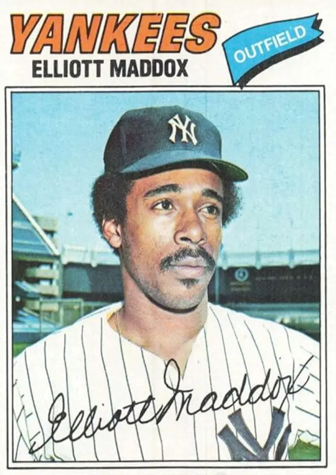

Elliott Maddox
Career Highlights & Facts
(Facts are AI-generated and may require verification)
- Finished third in the 1970 American League Rookie of the Year voting.
- Led the American League in times on base with 265 in 1974.
- Sued the City of New York after a career-altering knee injury at Shea Stadium in 1975.
Would you like to find out more about Elliott Maddox?
Career Totals
| WAR | AB | H | HR | BA | R | RBI | SB | OBP | SLG | OPS | OPS+ |
|---|---|---|---|---|---|---|---|---|---|---|---|
| 14.9 | 2843 | 742 | 18 | .261 | 360 | 234 | 60 | .358 | .334 | .692 | 100 |
Statistics via Baseball-Reference.com
The Original Clue